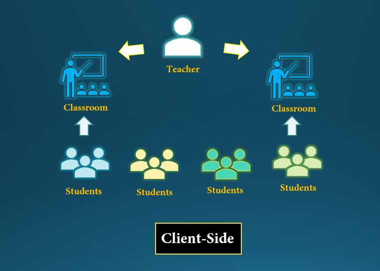
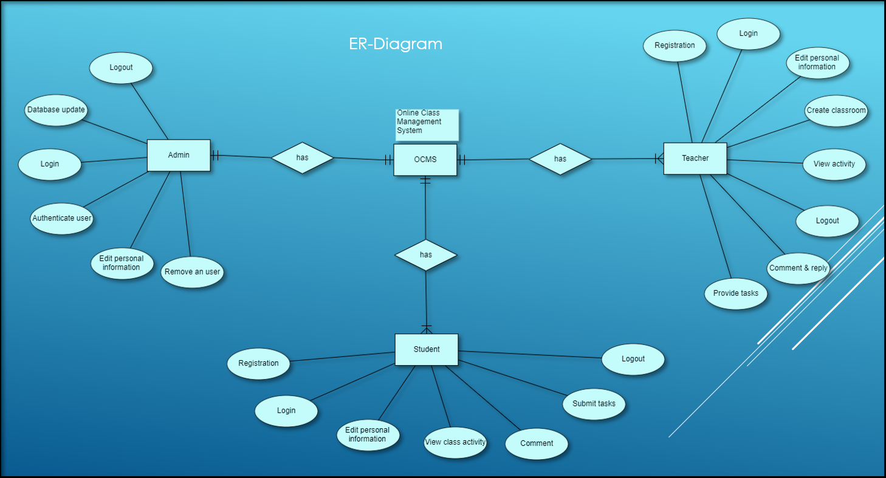

During this present situation, we already came to know that the world is facing difficulty in education process due to lack of face to face communication. For this, we tried to built an online application for the purpose of connecting easily in education system. The application Online Class Management System (OCMS) may help both teachers and students in online platform for studying any course in virtual classroom. Teachers and students can easily communicate through this application. Teachers can provide study materials for the enrolled students in their distinct registered course via classroom.

In this figure, we show the system architecture in which the display monitor (client's device) shows the OCMS homepage. The main process of the software based on Python and Django framework in the Backend. File system using MySQL database for the server maintenance.



Person( NID , Email , Name )
Faculty ( NID , Email , Name ,faculty_id )
Admin (NID , Email , Name , Administator_id ,Add_studen , Manage_student)
Student ( Student_id , image )
F_Account ( F.Email , User_name , Password , faculty_id)
S_Account ( S.Email , User_name , Password , Student_id)
S_Dashboard ( S.Dash_id )
Task ( Task_number , PDF , Assignment )
F_Dashboard ( F.Dashboard_id )
Courses( course_id , title )
Section ( course_id , section_id )
takes (facuty_id , couse_id )
Assign( Faculty_id , task_number)
Check ( F_Dasboard_id , task_number , eye_tracking)